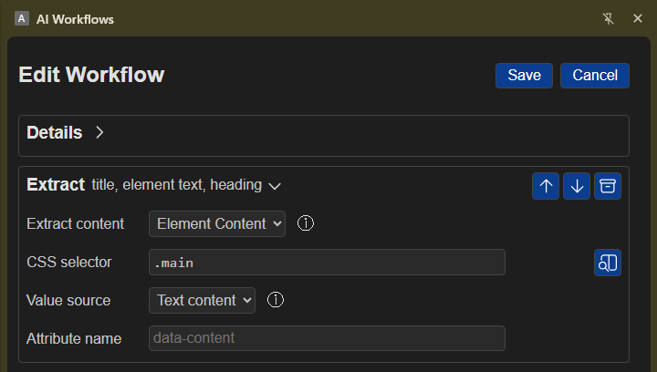

Extract Step (extract)
The Extract step (extract) is the core web scraping engine of the AI Workflow Chrome Extension. It executes inside the active browser tab to retrieve page metadata, user selection, visible body text, sanitized HTML, headings, links, form inputs, buttons, or targeted CSS selector elements for processing in downstream workflow steps.

Step Overview
| Property | Value |
|---|---|
| Step Label | Extract |
Step Type (type) |
extract |
| Variable ID Prefix | extract (e.g., extract_1, extract_2) |
| Group / Category | Core System Step |
| Execution Context | Active Tab Content Script (content.js / context-provider.ts) |
| Authentication | None (Uses active tab DOM access) |
Extraction Options Schema (options.*)
The Extract step configuration uses boolean flags and selector settings under the options object:
Field Key (options.*) |
Form / UI Label | Type | Default | Description & Token Mapping |
|---|---|---|---|---|
includeTitle |
Title | boolean |
true |
Extracts the browser tab title (document.title). Reference token: {{extract_1.title}}. |
includeSelection |
Selection | boolean |
true |
Extracts text currently highlighted/selected by the user. Reference token: {{extract_1.selection}}. |
includeHeadings |
Headings | boolean |
true |
Scrapes primary heading text (h1, h2). Reference token: {{extract_1.heading}}. |
includePageText |
Full Text | boolean |
false |
Scrapes normalized, visible text across the entire page body. Reference token: {{extract_1.content}}. |
includeCleanHtml |
Clean HTML | boolean |
false |
Scrapes sanitized page HTML with scripts, styles, and events removed. Reference token: {{extract_1.content}}. |
includePageHtml |
Full HTML | boolean |
false |
Scrapes raw document.documentElement.outerHTML. Reference token: {{extract_1.content}}. |
includeElement |
Element Content | boolean |
false |
Enables targeted CSS selector extraction. Reference token: {{extract_1.content}}. |
contentSelector |
CSS Selector | string |
"" |
Valid CSS selector targeting a specific page element (e.g. [data-testid='price'], h1.title). |
contentValueSource |
Value Source | select |
"textContent" |
Method for reading element data: textContent, value, or attribute. |
contentAttribute |
Attribute Name | string |
"" |
Specific DOM attribute name to read when contentValueSource is set to attribute (e.g. src, href, data-id). |
includeLinks |
Links | boolean |
false |
Scrapes all anchor link URLs (<a href>) on the page separated by newlines. Reference token: {{extract_1.links}}. |
includeButtons |
Buttons | boolean |
false |
Scrapes clickable button selectors and text/value labels. Reference token: {{extract_1.buttons}}. |
includeFields |
Fields | boolean |
false |
Scrapes input, textarea, and select elements with selectors, labels, and placeholders. Reference token: {{extract_1.fields}}. |
Targeted Element Scraping (includeElement)
When extracting specific components rather than full pages, set includeElement: true and configure contentSelector, contentValueSource, and contentAttribute:
[Extract Content Source: Element Content]
├── CSS Selector: "a.download-link"
├── Value Source: "attribute"
└── Attribute Name: "href"
Supported Value Sources
textContent(Default):- Clones the target element tree, strips blacklisted tags (
<script>,<style>,<noscript>,<iframe>), and extracts normalized, visible text content from the element and all child nodes.
- Clones the target element tree, strips blacklisted tags (
value:- Reads the interactive
.valueproperty of form input fields (HTMLInputElement,HTMLTextAreaElement, orHTMLSelectElement).
- Reads the interactive
attribute:- Calls
element.getAttribute(contentAttribute)to read specific DOM attribute strings, such as image sources (src), link destinations (href), or custom datasets (data-*).
- Calls
Dynamic Token Detection (detectExtractOptionsFromTokens)
To streamline workflow creation, the extension runner automatically inspects downstream workflow steps for tokens referencing an Extract step (e.g. {{extract_1.fields}} or {{extract_1.title}}).
During execution, detectExtractOptionsFromTokens() computes and enables required extraction options automatically:
{{extract_1.title}}> Automatically setsincludeTitle: true.{{extract_1.selection}}> Automatically setsincludeSelection: true.{{extract_1.heading}}> Automatically setsincludeHeadings: true.{{extract_1.links}}> Automatically setsincludeLinks: true.{{extract_1.buttons}}> Automatically setsincludeButtons: true.{{extract_1.fields}}> Automatically setsincludeFields: true.{{extract_1.content}}> Automatically setsincludeElement: true(or page content flag).{{extract_1}}(Whole Object) > Enables all standard metadata flags (title,selection,heading,links,buttons,fields,content).
Interactive Visual Element Picker
In the step card editor, clicking the Pick / View Element button (open-preview.svg) activates an interactive picker overlay on the live web page:
- Hovering over webpage elements highlights them with a blue bounding box.
- Clicking an element automatically generates a stable, minimal CSS selector (e.g.,
button#submitordiv.article-title) and populates thecontentSelectorinput field. - Pressing Escape cancels element picking safely without modifying fields.
Template Tokens & State Output Map
When an Extract step executes, its results are stored under state[step.id]. Downstream steps can access individual properties using standard double-bracket notation:
| Token | Data Type | Description |
|---|---|---|
{{extract_1.title}} |
string |
Page tab title (document.title). |
{{extract_1.selection}} |
string |
User's currently highlighted/selected text. |
{{extract_1.heading}} |
string |
First primary heading found (h1 or h2). |
{{extract_1.content}} |
string |
Extracted page content (Full Text, Clean HTML, or targeted element text/attribute). |
{{extract_1.links}} |
string |
Newline-separated list of all link URLs on the page. |
{{extract_1.buttons}} |
array |
List of clickable buttons with selectors and text labels ([{ selector, value }]). |
{{extract_1.fields}} |
array |
List of input fields with selectors, labels, and placeholders ([{ selector, label, placeholder }]). |
Example Workflow Configurations (JSON)
Example 1: Basic Page Metadata & Selection Extraction
{
"id": "extract_1",
"type": "extract",
"options": {
"includeTitle": true,
"includeHeadings": true,
"includeSelection": true,
"includePageText": false,
"includeCleanHtml": false,
"includePageHtml": false,
"includeLinks": false,
"includeButtons": false,
"includeFields": false,
"includeElement": false,
"contentSelector": "",
"contentValueSource": "textContent",
"contentAttribute": ""
},
"config": {}
}
Example 2: Targeted Element Attribute Extraction (Extract Hero Image URL)
{
"id": "extract_hero_image",
"type": "extract",
"options": {
"includeTitle": true,
"includeSelection": false,
"includeHeadings": false,
"includePageText": false,
"includeCleanHtml": false,
"includePageHtml": false,
"includeLinks": false,
"includeButtons": false,
"includeFields": false,
"includeElement": true,
"contentSelector": "img.hero-banner",
"contentValueSource": "attribute",
"contentAttribute": "src"
},
"config": {}
}
Example 3: Full Web Page Text Scraping for AI Context
{
"id": "extract_full_article",
"type": "extract",
"options": {
"includeTitle": true,
"includeHeadings": true,
"includeSelection": false,
"includePageText": true,
"includeCleanHtml": false,
"includePageHtml": false,
"includeLinks": false,
"includeButtons": false,
"includeFields": false,
"includeElement": false,
"contentSelector": "",
"contentValueSource": "textContent",
"contentAttribute": ""
},
"config": {}
}